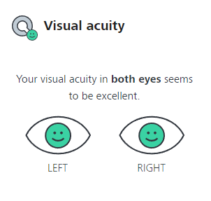

Laboratório 03 - Exercício de Audiometria e Visual
Aluno: Henrique Kenji Okutani - RA: 11201811103
Objetivos gerais: Constatar as características psicoacústicas de sensibilidade à intensidade, banda audívell e mascaramento harmônico; Constatar as características da visão quanto à acuidade visual.
Áudio Descrição:
Teste de Audiometria:
A partir do teste de audiometria disponível no site Online Hearing Test and Audiogram Printout, foram realizados testes de sensibilidade auditiva para identificar, para cada faixa de frequência, qual o nível de som mínimo o sistema auditivo do integrante capta.A figura 1 representa o primeiro teste, realizado utilizando fones de ouvidos supra-auricular, enquanto a figura 2 representa o teste realizado sem fones, com o som sendo reproduzido de um alto falante convencional.
Nas figuras, os circulos vermelhos representam a audição na orelha direita (R), os xises (X) azuis representam a orelha esquerda (L) e as cruzes (+) verdes representam a sensibilidade mista, isto é, quando o som é reproduzido nas duas orelhas simultâneamente.
Em cada teste, também foram reaizados a calibração do volume dos falantes conforme as instruções fornecidas.
Figura 1 - Teste com fones de ouvido
Figura 2 - Teste sem fones de ouvido
Comparando os resultados obtidos nos dois gráficos dados pelas figuras acima, é possível observar que a sensibilidade no teste realizado com fones de ouvido foi superior à do teste sem eles. Isso corresponde com a maior dificuldade notada, durante a realização do segundo teste, para ouvir os sons reproduzidos, que se explica pela falta de isolamento acústico da sala em que o teste foi realizado. Já no teste com fones de ouvido, o próprio fone cria um isolamento acústico, prevenindo que o barulho exterior interfira no teste, o tornando mais preciso e confiável.
Teste de Acuidade Visual
A ZEISS disponibiliza em seu site uma série de testes para avaliação da percepção visual do usuário (ZEISS Online Vision Screening). Cada um dos cinco testes foram realizados, seguindo rigorosamente as intruções dadas em cada um deles. Uma instrução em comum de todos eles é que o brilho do monitor fosse ajustado para o máximo, e que o usuário certifique-se de utilizar os óculos de grau nos testes, caso possua, e que é o caso do integrante. Cada um dos testes, com o respectivo resultado, estão dispostos abaixo:Teste de acuidade visual
A acuidade visual é a capacidade de discernir detalhes finos, crucial para leitura e reconhecimento de objetos distantes. Neste teste, era necessário discernir qual era a direção da abertura em uma circunferência, e em cada nível, a circunferÊncia se tornava menor.
O resultado deste teste foi positivo, indicando uma boa acuidade visual do usuário.
Teste de contraste visual

Essencial para distinguir diferenças de luminosidade em condições diversas. Importante em ambientes com pouca luz. O teste é semelhante ao anterior, de acuidade visual, mas neste, ao invés do objeto diminuir, este vai se tornando mais claro, tendendo para o tom de branco do fundo da tela, ou seja, diminuindo o contraste entre o objeto e o fundo.
O resultado deste teste foi positivo, indicando uma boa percepção visual de contraste do usuário.
Teste de colorimetria visual
Permite perceber e distinguir cores no espectro visível. O teste consistia em uma distriuição de pontos de diferentes tamanhos, coloridos de certa forma que formassem o perfil de números, ou não. Cabe ao usuário acertar qual o número, ou caso nenhum número seja representado, apontar isso também.
O resultado foi positivo, indicando uma boa percepção visual de cores do usuário.
Teste de astigmatismo
O astigmatismo é causado pela curvatura irregular da córnea, distorcendo a visão. Neste teste, haviam linhas paralelas (bem próximas) dispostas em diferentes direções, e questionava-se ao usuário se era possível notar dierença no tom de cinza delas. Isso porque, caso o usuário possua astigmatismo, a distorção das linhas causa uma junção entre o preto das linahs e o branco do espaço entre elas, resultando em tons de cinza.
O resultado foi negativo, sendo já notada uma diferença nas linhas verticais e horizontais logo na primeira etapa. Cabe pontuar que o integrante possui um diagnóstico de astigmatismo, mas as lentes de correção estão desatualizadas.
Teste de Campo de Visão
Refere-se à extensão do ambiente visível enquanto fixamos um ponto central. Importante para a percepção completa do ambiente. Perda, como no glaucoma, afeta a detecção de objetos em movimento. Neste teste, foi solicitasse que a visão fosse aproximada da tela, distando 30 cm, e que fosse focalizada um ponto, disposto no centro de uma malha quadriculada. Questionou-se, para cada olho, se era notado alguma distorção ou diferença na cor na malha.
O resultado foi positivo, indicando uma boa percepção visual do campo de visão.